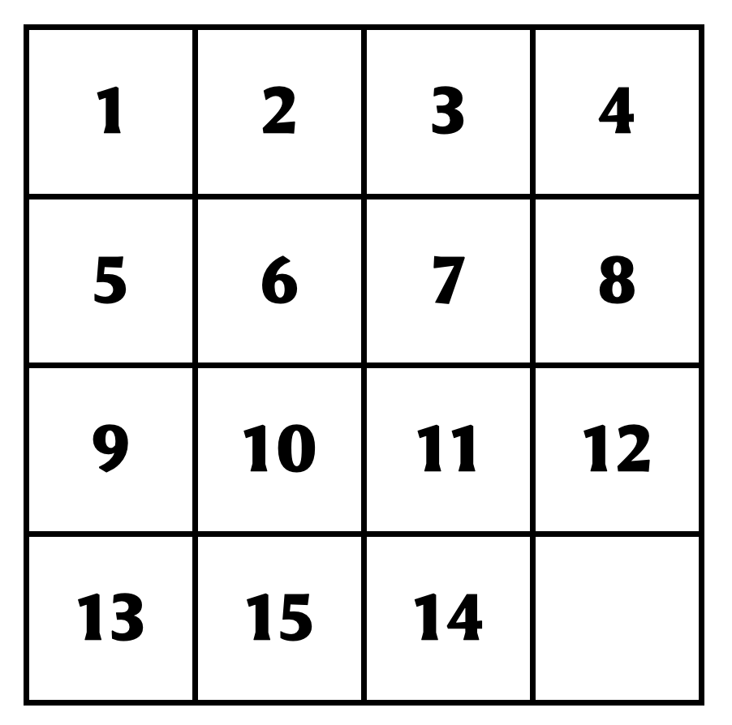
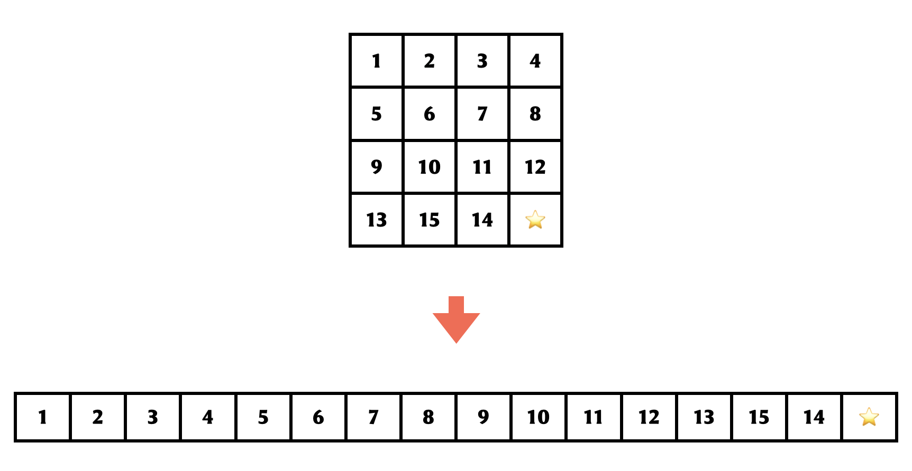
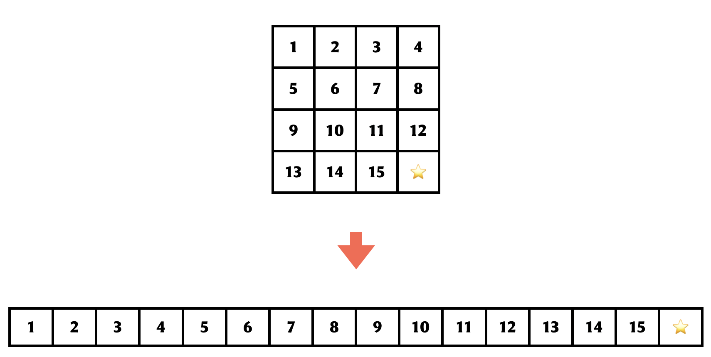
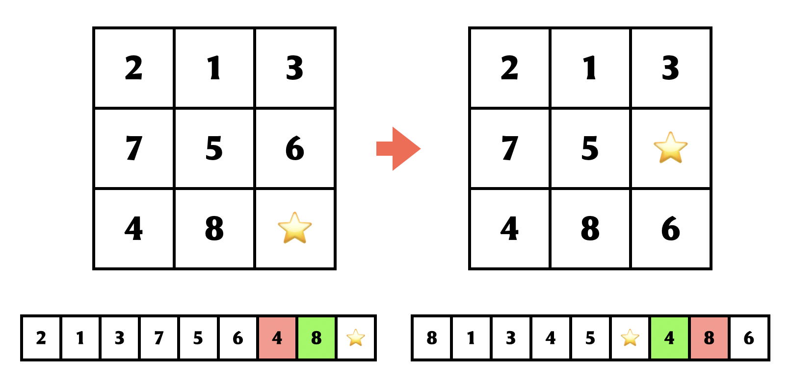
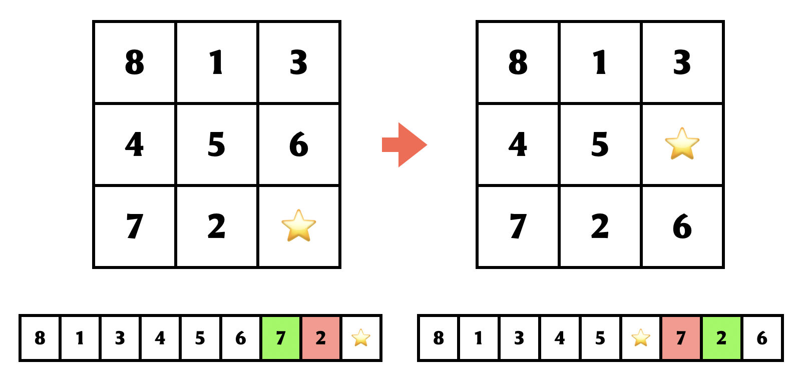

Presenting the 15 puzzle:
This is a sliding puzzle having 15 square tiles numbered 1–15 in a frame that is 4 tiles high and 4 tiles wide, leaving one unoccupied tile position. Tiles in the same row or column of the open position can be moved by sliding them horizontally or vertically, respectively. The goal of the puzzle is to place the tiles in numerical order.
According to Wikipedia, Johnson & Story (1879) used a parity argument to show that half of the starting positions for the n-puzzle are impossible to resolve, no matter how many moves are made. We are going to explore two approaches* parity-based argument to show that the puzzle shown here on the right is unsolvable.
*I do believe the two proofs are essentially the same with slight differences of language.

Common to both approaches is the idea of associating a permutation with every state of the puzzle. For the purposes of this discussion, we will think of a permutation simply as a sequence of elements. To turn the grid layout into a sequence, you could, for instance, line up the rows next to each other, in other words, read off the numbers from left-to-right and top-to-bottom:

So we think of every puzzle state as a permutation over the set \{1, 2, \ldots, 15\} \cup \{\star\}, where we use \star to denote the blank space. For a particular sequence \sigma and an index 1 \leq i \leq 16, we will use \sigma_i to refer to the element that is at the i^{th} position in the sequence \sigma.
A couple of definitions in the context of permutations will be useful:
- An inversion is a pair of elements that is out of their natural order. More precisely, if we have indices i < j such that \sigma_i > \sigma_j, then the pair (i,j) indulges in an inversion. Note that the starting state of our puzzle here has exactly one inversion.
- A transposition of locations i and j **is essentially a swap of the elements at positions i and j of a given permutation. So this is an operation performed on a permutation. Let’s say this again with more explicit notation — if we start with \sigma, then the permutation \tau obtained from \sigma by a transposition of i and j is given by the following:
\tau_\ell = \begin{cases} \sigma_j & \text{if } \ell = i,\\ \sigma_i & \text{if } \ell = j,\\ \sigma_\ell & \text{otherwise.} \end{cases}
The identity permutation, which we will denote by \iota, is special — it’s the following sequence:
\{1,2,\ldots,14,15,\star\}.
It turns out that every permutation \sigma can be obtained from the identity permutation by a sequence of transpositions. This is not terribly hard to see — start with the identity permutation, and repeat the following until the permutation at hand is the one you want to see: find a location i that’s messed up in the current permutation, i.e, it doesn’t have the element you need in there. Find where the element is in the current permutation, and if that’s location j, you could perform a transposition between i and j. This fixes up the location i. In every step, you fix at least one location, and never mess up anything else: so at the end of at most n steps (assuming you are working with a sequence of n elements), you would be done. 🎉
For example, suppose the permutation you want to obtain is 3,4,2,1. Here is how the argument above would play out:
- 1,2,3,4. The first location is messed up, so swap 1 and 3.
- 3,2,1,4. The second location is messed up, so swap 2 and 4.
- 3,4,1,2. The third location is messed up, so swap 1 and 2.
- 3,4,2,1. Now we are done.
Note that this may not be the only way of performing a sequence of transpositions that can morph \iota into \sigma — there may be various roads to \sigma. However, it turns out that no matter what route you take to transform \iota \longrightarrow \sigma, the number of steps you perform will always have the same parity. So specifically, it’s not possible for you to have a series of, say, seventeen transpositions that turn \iota into \sigma, and for me to have a series of forty-two transpositions that do the same. We will take this as a cute exercise for the reader as given.
This partitions the set of all permutations into two categories:
- even permutations: those permutations that are reachable from the identity with an even number of transpositions
- odd permutations: those permutations that are reachable from the identity with an odd number of transpositions
The fact from the previous paragraph above makes this classification unambiguous.
Alright, so now we have all the terminology we need to get to the argument about why the puzzle state we started with is unsolvable. We can roll up our sleeves and get started.
The first line of argument is based on this Numberphile video, and is also the one described in this 1999 American Math Monthly article by Archer. We begin with the observation that every move in the game is really a transposition behind the scenes. In particular, let’s say that we are currently in state s and we perform some move and move to state t. Let’s say the permutation associated with s was \sigma and the permutation associated with t is \tau. It’s not hard to see that:
- \tau can be obtained from \sigma with a single transposition.
Now, note that the permutation corresponding to our target state is the following:

In terms of the game state, notice that the final state has the blank tile at the bottom-right corner, just like we had at the start state. This means that in a hypothetical sequence of moves that morphs the initial game state into this solved state, we must have performed:
- an equal number of left and right moves; and
- an equal number of up and down moves.
If this is not the case — imagine the blank tile traveling through the board as you perform the moves — if the number of times you moved in opposite directions did not exactly cancel, it would be impossible for the blank location to be back at it’s original location.
So in any winning sequence, the number of moves performed must be even. This implies that the permutation corresponding to the start state, in particular, can be obtained from the identity permutation with an even number of transformations. That makes the starting permutation an even permutation.
However, the permutation corresponding to the start state that we have been handed out is clearly an odd permutation: it can be obtained from the identtiy permutation by a transposition of the elements at the 14-th and 15-th positions. So, well, no dice! This shows that every solvable state that places a blank tile at the bottom-right corner must correspond to an even permutation. This does not automatically imply that all such states associated with even permutations are solvable* — it just shows that states with blank tiles at the bottom-right corner corresponding to odd permutations are firmly out of reach.
*It does turns out that all even permutations are in fact solvable.
The second approach is based on the notion of inversions. This one is based on the Strong Induction lecture in the MITOCW course on Mathematics for Computer Science. For this proof I’ll actually switch to the 3 \times 3 version of the puzzle because I don’t know how to extend it to the 15-puzzle the case analysis is more manageable for this version:

As we said before, the permutation associated with the starting point of the puzzle has exactly one inversion, while the permutation associated with the solved state, which is the identity permutation, has no inversions. So, when you make a move in the puzzle, what happens to the number of inversions?
As before, let’s say that we are currently in state s and we perform some move and move to state t. Let’s say the permutation associated with s was \sigma and the permutation associated with t is \tau. Let us say that a pair of elements (p,q) is affected by a move in the game if the relative order of p and q is different in the permutations \sigma and \tau. Now we have the following:
- if we perform a row move, the relative order of all elements corresponding to numbers remains the same — in particular, all affected pairs involve \star — so the number of inversions in \tau is exactly the same as the number of inversions in \sigma.
- if we perform a column move, typically the element that is being moved, say p, ends up effectively jumping over two other elements, say a and b. In this case the following scenarios arise:
Neither (p,a) nor (p,b) is an inversion in \sigma.

Neither (p,a) nor (p,b) is an inversion in \sigma - In this case, both (p,a) and (p,b) emerge as new inversions in \tau, and the total number of inversions in \tau is two more than the total number of inversions in \sigma.
Both (p,a) and (p,b) are inversions in \sigma.

Both (p,a) and (p,b) are inversions in \sigma - In this case, neither (p,a) nor (p,b) are inversions in \tau — they both get fixed! So the total number of inversions in \tau is two less than the total number of inversions in \sigma.
While (p,a) is an inversion in \sigma, (p,b) is not.

While (p,a) is an inversion in \sigma, (p,b) is not - In this case, you fix some, you spoil some — so in \tau, (p,a) is not an inversion any more, but (p,b) emerges as a new inversion; so the changes cancel and the number of inversions in \tau is exactly the same as the number of inversions in \sigma.
While (p,a) is not an inversion in \sigma, (p,b) is one.

While (p,a) is not an inversion in \sigma, (p,b) is one - As before, you fix some, you spoil some just the other way now — so in \tau, (p,a) is a new inversion, but (p,b) is no longer one; so the changes cancel again and the number of inversions in \tau is exactly the same as the number of inversions in \sigma.
The long and short of all this is that after every move, the number of inversions either remains the same or changes by two. So no matter how many moves you perform, a state whose associated permutation has an odd number of inversions is going to remain inaccessible.
Tada!
So there we have it… I have a feeling that a little bit of language connecting transpositions and inversions will really make these proofs quite identical, at least for the 3 \times 3 case — although I did worry that the first approach seemed to rely rather explicitly on the location of the blank tile while the second one didn’t. It is quite possible that the first one actually demonstrates more than I’m giving it credit for!
Meanwhile, to be honest, I haven’t thought much about pushing the second line of attack to the 4 \times 4 case — it seems already that the statement about the change in the number of inversions is no longer true and the change itself is no longer two: in particular, it could apparently go up or down by three or one instead, since the element involved in the action, p is now potentially jumping over three other elements, a, b, and c… so this, at least from an immediate consideration, doesn’t quite take us where we want to go.
Possibly one has to work with a somewhat different invariant, maybe a notion of inversions that involve triples instead of pairs? Any comments on this would be very welcome, and I’ll have an update once I understand this a little better!